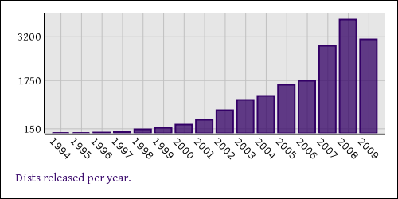

AnyDBM_File 1.00 Archive::Extract 0.24 Archive::Tar 1.38 Archive::Tar::Constant 0.02 Archive::Tar::File 0.02 Attribute::Handlers 0.79 AutoLoader 5.63 AutoSplit 1.05 B 1.17 B::Concise 0.74 B::Debug 1.05 B::Deparse 0.83 B::Lint 1.09 B::Showlex 1.02 B::Terse 1.05 B::Xref 1.01 Benchmark 1.1 CGI 3.29 CGI::Apache 1.00 CGI::Carp 1.29 CGI::Cookie 1.28 CGI::Fast 1.07 CGI::Pretty 1.08 CGI::Push 1.04 CGI::Switch 1.00 CGI::Util 1.5_01 CPAN 1.9205 CPAN::API::HOWTO CPAN::Debug 5.402212 CPAN::DeferedCode 5.50 CPAN::FirstTime 5.402229 CPAN::HandleConfig 5.402212 CPAN::Kwalify 5.401418 CPAN::Nox 5.402411 CPAN::Queue 5.402212 CPAN::Tarzip 5.402213 CPAN::Version 5.5 CPANPLUS 0.84 CPANPLUS::Backend CPANPLUS::Backend::RV CPANPLUS::Config CPANPLUS::Configure CPANPLUS::Configure::Setup CPANPLUS::Dist CPANPLUS::Dist::Base 0.01 CPANPLUS::Dist::Build 0.06_02 CPANPLUS::Dist::Build::Constants 0.01 CPANPLUS::Dist::MM CPANPLUS::Dist::Sample CPANPLUS::Error CPANPLUS::Internals 0.84 CPANPLUS::Internals::Constants 0.01 CPANPLUS::Internals::Constants::Report 0.01 CPANPLUS::Internals::Extract CPANPLUS::Internals::Fetch CPANPLUS::Internals::Report CPANPLUS::Internals::Search CPANPLUS::Internals::Source CPANPLUS::Internals::Utils CPANPLUS::Internals::Utils::Autoflush CPANPLUS::Module CPANPLUS::Module::Author CPANPLUS::Module::Author::Fake CPANPLUS::Module::Checksums CPANPLUS::Module::Fake CPANPLUS::Module::Signature CPANPLUS::Selfupdate CPANPLUS::Shell CPANPLUS::Shell::Classic 0.0562 CPANPLUS::Shell::Default 0.84 CPANPLUS::Shell::Default::Plugins::CustomSource CPANPLUS::Shell::Default::Plugins::Remote CPANPLUS::Shell::Default::Plugins::Source CPANPLUS::inc Carp 1.08 Carp::Heavy 1.08 Class::ISA 0.33 Class::Struct 0.63 Compress::Raw::Zlib 2.008 Compress::Zlib 2.008 Config Config::Extensions 0.01 Cwd 3.2501 DB 1.01 DBM_Filter 0.02 DBM_Filter::compress 0.01 DBM_Filter::encode 0.01 DBM_Filter::int32 0.01 DBM_Filter::null 0.01 DBM_Filter::utf8 0.01 DB_File 1.816_1 DCLsym 1.03 Data::Dumper 2.121_14 Devel::DProf 20050603.00 Devel::InnerPackage 0.3 Devel::PPPort 3.13 Devel::Peek 1.03 Devel::SelfStubber 1.03 Digest 1.15 Digest::MD5 2.36_01 Digest::SHA 5.45 Digest::base 1.00 Digest::file 1.00 DirHandle 1.01 Dumpvalue 1.12 DynaLoader 1.08 Encode 2.23 Encode::Alias 2.07 Encode::Byte 2.03 Encode::CJKConstants 2.02 Encode::CN 2.02 Encode::CN::HZ 2.04 Encode::Config 2.04 Encode::EBCDIC 2.02 Encode::Encoder 2.01 Encode::Encoding 2.05 Encode::GSM0338 2.00 Encode::Guess 2.02 Encode::JP 2.03 Encode::JP::H2Z 2.02 Encode::JP::JIS7 2.03 Encode::KR 2.02 Encode::KR::2022_KR 2.02 Encode::MIME::Header 2.05 Encode::MIME::Header::ISO_2022_JP 1.03 Encode::MIME::Name 1.01 Encode::Symbol 2.02 Encode::TW 2.02 Encode::Unicode 2.05 Encode::Unicode::UTF7 2.04 English 1.04 Env 1.00 Errno 1.10 Exporter 5.62 Exporter::Heavy 5.62 ExtUtils::CBuilder 0.21 ExtUtils::CBuilder::Base 0.21 ExtUtils::CBuilder::Platform::Unix 0.21 ExtUtils::CBuilder::Platform::VMS 0.22 ExtUtils::CBuilder::Platform::Windows 0.21 ExtUtils::CBuilder::Platform::aix 0.21 ExtUtils::CBuilder::Platform::cygwin 0.21 ExtUtils::CBuilder::Platform::darwin 0.21 ExtUtils::CBuilder::Platform::dec_osf 0.21 ExtUtils::CBuilder::Platform::os2 0.21 ExtUtils::Command 1.13 ExtUtils::Command::MM 6.42 ExtUtils::Constant 0.2 ExtUtils::Constant::Base 0.04 ExtUtils::Constant::ProxySubs 0.05 ExtUtils::Constant::Utils 0.01 ExtUtils::Constant::XS 0.02 ExtUtils::Embed 1.27 ExtUtils::Install 1.44 ExtUtils::Installed 1.43 ExtUtils::Liblist 6.42 ExtUtils::Liblist::Kid 6.42 ExtUtils::MM 6.42 ExtUtils::MM_AIX 6.42 ExtUtils::MM_Any 6.42 ExtUtils::MM_BeOS 6.42 ExtUtils::MM_Cygwin 6.42 ExtUtils::MM_DOS 6.42 ExtUtils::MM_MacOS 6.42 ExtUtils::MM_NW5 6.42 ExtUtils::MM_OS2 6.42 ExtUtils::MM_QNX 6.42 ExtUtils::MM_UWIN 6.42 ExtUtils::MM_Unix 6.42 ExtUtils::MM_VMS 6.42 ExtUtils::MM_VOS 6.42 ExtUtils::MM_Win32 6.42 ExtUtils::MM_Win95 6.42 ExtUtils::MY 6.42 ExtUtils::MakeMaker 6.42 ExtUtils::MakeMaker::Config 6.42 ExtUtils::MakeMaker::bytes 6.42 ExtUtils::MakeMaker::vmsish 6.42 ExtUtils::Manifest 1.51_01 ExtUtils::Miniperl ExtUtils::Mkbootstrap 6.42 ExtUtils::Mksymlists 6.42 ExtUtils::Packlist 1.43 ExtUtils::ParseXS 2.18_02 ExtUtils::testlib 6.42 Fatal 1.05 Fcntl 1.06 File::Basename 2.76 File::CheckTree 4.3 File::Compare 1.1005 File::Copy 2.11 File::DosGlob 1.00 File::Fetch 0.14 File::Find 1.12 File::Glob 1.06 File::GlobMapper 0.000_02 File::Path 2.04 File::Spec 3.2501 File::Spec::Cygwin 3.2501 File::Spec::Epoc 3.2501 File::Spec::Functions 3.2501 File::Spec::Mac 3.2501 File::Spec::OS2 3.2501 File::Spec::Unix 3.2501 File::Spec::VMS 3.2501 File::Spec::Win32 3.2501 File::Temp 0.18 File::stat 1.00 FileCache 1.07 FileHandle 2.01 Filespec 1.12 Filter::Simple 0.82 Filter::Util::Call 1.07 FindBin 1.49 GDBM_File 1.08 Getopt::Long 2.37 Getopt::Std 1.05 Hash::Util 0.07 Hash::Util::FieldHash 1.03 I18N::Collate 1.00 I18N::LangTags 0.35 I18N::LangTags::Detect 1.03 I18N::LangTags::List 0.35 I18N::Langinfo 0.02 IO 1.23_01 IO::Compress::Adapter::Deflate 2.008 IO::Compress::Adapter::Identity 2.008 IO::Compress::Base 2.008 IO::Compress::Base::Common 2.008 IO::Compress::Deflate 2.008 IO::Compress::Gzip 2.008 IO::Compress::Gzip::Constants 2.008 IO::Compress::RawDeflate 2.008 IO::Compress::Zip 2.008 IO::Compress::Zip::Constants 2.008 IO::Compress::Zlib::Constants 2.008 IO::Compress::Zlib::Extra 2.008 IO::Dir 1.06 IO::File 1.14 IO::Handle 1.27 IO::Pipe 1.13 IO::Poll 0.07 IO::Seekable 1.10 IO::Select 1.17 IO::Socket 1.30_01 IO::Socket::INET 1.31 IO::Socket::UNIX 1.23 IO::Uncompress::Adapter::Identity 2.008 IO::Uncompress::Adapter::Inflate 2.008 IO::Uncompress::AnyInflate 2.008 IO::Uncompress::AnyUncompress 2.008 IO::Uncompress::Base 2.008 IO::Uncompress::Gunzip 2.008 IO::Uncompress::Inflate 2.008 IO::Uncompress::RawInflate 2.008 IO::Uncompress::Unzip 2.008 IO::Zlib 1.07 IPC::Cmd 0.40_1 IPC::Msg 1.02 IPC::Open2 1.02 IPC::Open3 1.02 IPC::Semaphore 1.02 IPC::SysV 1.05 List::Util 1.19 Locale::Constants 2.07 Locale::Country 2.07 Locale::Currency 2.07 Locale::Language 2.07 Locale::Maketext 1.12 Locale::Maketext::Guts Locale::Maketext::GutsLoader Locale::Maketext::Simple 0.18 Locale::Script 2.07 Log::Message 0.01 Log::Message::Config 0.01 Log::Message::Handlers Log::Message::Item Log::Message::Simple 0.04 MIME::Base64 3.07_01 MIME::QuotedPrint 3.07 Math::BigFloat 1.59 Math::BigFloat::Trace 0.01 Math::BigInt 1.88 Math::BigInt::Calc 0.52 Math::BigInt::CalcEmu 0.05 Math::BigInt::FastCalc 0.16 Math::BigInt::Trace 0.01 Math::BigRat 0.21 Math::Complex 1.37 Math::Trig 1.04 Memoize 1.01_02 Memoize::AnyDBM_File 0.65 Memoize::Expire 1.00 Memoize::ExpireFile 1.01 Memoize::ExpireTest 0.65 Memoize::NDBM_File 0.65 Memoize::SDBM_File 0.65 Memoize::Storable 0.65 Module::Build 0.2808_01 Module::Build::Base 0.2808_01 Module::Build::Compat 0.2808_01 Module::Build::Config 0.2808_01 Module::Build::ConfigData Module::Build::Cookbook Module::Build::Dumper Module::Build::ModuleInfo 0.2808_01 Module::Build::Notes 0.2808_01 Module::Build::PPMMaker 0.2808_01 Module::Build::Platform::Amiga 0.2808_01 Module::Build::Platform::Default 0.2808_01 Module::Build::Platform::EBCDIC 0.2808_01 Module::Build::Platform::MPEiX 0.2808_01 Module::Build::Platform::MacOS 0.2808_01 Module::Build::Platform::RiscOS 0.2808_01 Module::Build::Platform::Unix 0.2808_01 Module::Build::Platform::VMS 0.2808_01 Module::Build::Platform::VOS 0.2808_01 Module::Build::Platform::Windows 0.2808_01 Module::Build::Platform::aix 0.2808_01 Module::Build::Platform::cygwin 0.2808_01 Module::Build::Platform::darwin 0.2808_01 Module::Build::Platform::os2 0.2808_01 Module::Build::PodParser 0.2808_01 Module::Build::Version 0.7203 Module::Build::YAML 0.50 Module::CoreList 2.12 Module::Load 0.12 Module::Load::Conditional 0.22 Module::Loaded 0.01 Module::Pluggable 3.6 Module::Pluggable::Object 3.6 Moped::Msg 0.01 NDBM_File 1.07 NEXT 0.60_01 Net::Cmd 2.29 Net::Config 1.11 Net::Domain 2.20 Net::FTP 2.77 Net::FTP::A 1.18 Net::FTP::E 0.01 Net::FTP::I 1.12 Net::FTP::L 0.01 Net::FTP::dataconn 0.11 Net::NNTP 2.24 Net::Netrc 2.12 Net::POP3 2.29 Net::Ping 2.33 Net::SMTP 2.31 Net::Time 2.10 Net::hostent 1.01 Net::netent 1.00 Net::protoent 1.00 Net::servent 1.01 O 1.00 ODBM_File 1.07 Object::Accessor 0.32 Opcode 1.11 POSIX 1.13 Package::Constants 0.01 Params::Check 0.26 PerlIO 1.04 PerlIO::encoding 0.10 PerlIO::scalar 0.05 PerlIO::via 0.04 PerlIO::via::QuotedPrint 0.06 Pod::Checker 1.43_01 Pod::Escapes 1.04 Pod::Find 1.34 Pod::Functions 1.03 Pod::Html 1.08 Pod::InputObjects 1.3 Pod::LaTeX 0.58 Pod::Man 2.16 Pod::ParseLink 1.06 Pod::ParseUtils 1.35 Pod::Parser 1.35 Pod::Perldoc 3.14_02 Pod::Perldoc::BaseTo Pod::Perldoc::GetOptsOO Pod::Perldoc::ToChecker Pod::Perldoc::ToMan Pod::Perldoc::ToNroff Pod::Perldoc::ToPod Pod::Perldoc::ToRtf Pod::Perldoc::ToText Pod::Perldoc::ToTk Pod::Perldoc::ToXml Pod::PlainText 2.02 Pod::Plainer 0.01 Pod::Select 1.35 Pod::Simple 3.05 Pod::Simple::BlackBox Pod::Simple::Checker 2.02 Pod::Simple::Debug Pod::Simple::DumpAsText 2.02 Pod::Simple::DumpAsXML 2.02 Pod::Simple::HTML 3.03 Pod::Simple::HTMLBatch 3.02 Pod::Simple::HTMLLegacy 5.01 Pod::Simple::LinkSection Pod::Simple::Methody 2.02 Pod::Simple::Progress 1.01 Pod::Simple::PullParser 2.02 Pod::Simple::PullParserEndToken Pod::Simple::PullParserStartToken Pod::Simple::PullParserTextToken Pod::Simple::PullParserToken 2.02 Pod::Simple::RTF 2.02 Pod::Simple::Search 3.04 Pod::Simple::SimpleTree 2.02 Pod::Simple::Text 2.02 Pod::Simple::TextContent 2.02 Pod::Simple::TiedOutFH Pod::Simple::Transcode Pod::Simple::TranscodeDumb 2.02 Pod::Simple::TranscodeSmart Pod::Simple::XMLOutStream 2.02 Pod::Text 3.08 Pod::Text::Color 2.03 Pod::Text::Overstrike 2 Pod::Text::Termcap 2.03 Pod::Usage 1.35 SDBM_File 1.06 Safe 2.12 Scalar::Util 1.19 Search::Dict 1.02 SelectSaver 1.01 SelfLoader 1.11 Shell 0.72_01 Socket 1.80 Stdio 2.3 Storable 2.18 Switch 2.13 Symbol 1.06 Sys::Hostname 1.11 Sys::Syslog 0.22 Sys::Syslog::win32::Win32 Term::ANSIColor 1.12 Term::Cap 1.12 Term::Complete 1.402 Term::ReadLine 1.03 Term::UI 0.18 Term::UI::History Test 1.25 Test::Builder 0.72 Test::Builder::Module 0.72 Test::Builder::Tester 1.09 Test::Builder::Tester::Color Test::Harness 2.64 Test::Harness::Assert 0.02 Test::Harness::Iterator 0.02 Test::Harness::Point 0.01 Test::Harness::Results 0.01 Test::Harness::Straps 0.26_01 Test::Harness::Util 0.01 Test::More 0.72 Test::Simple 0.72 Text::Abbrev 1.01 Text::Balanced 2.0.0 Text::ParseWords 3.26 Text::Soundex 3.03 Text::Tabs 2007.1117 Text::Wrap 2006.1117 Thread 3.02 Thread::Queue 2.00 Thread::Semaphore 2.01 Tie::Array 1.03 Tie::File 0.97_02 Tie::Handle 4.1 Tie::Hash 1.02 Tie::Hash::NamedCapture 0.06 Tie::Memoize 1.1 Tie::RefHash 1.37 Tie::Scalar 1.00 Tie::StdHandle Tie::SubstrHash 1.00 Time::HiRes 1.9711 Time::Local 1.18 Time::Piece 1.12 Time::Piece::Seconds Time::Seconds Time::gmtime 1.03 Time::localtime 1.02 Time::tm 1.00 UNIVERSAL 1.04 Unicode 5.0.0 Unicode::Collate 0.52 Unicode::Normalize 1.02 Unicode::UCD 0.25 User::grent 1.01 User::pwent 1.00 Win32 0.34 Win32API::File 0.1001_01 Win32API::File::ExtUtils::Myconst2perl 1 Win32CORE 0.02 XS::APItest 0.12 XS::Typemap 0.02 XSLoader 0.08 XSSymSet 1.1 attributes 0.08 attrs 1.02 autouse 1.06 base 2.13 bigint 0.22 bignum 0.22 bigrat 0.22 blib 1.03 bytes 1.03 charnames 1.06 constant 1.13 diagnostics 1.17 encoding 2.06 encoding::warnings 0.11 feature 1.11 fields 2.13 filetest 1.02 if 0.05 integer 1.00 less 0.02 lib 0.5565 locale 1.00 mro 1.00 open 1.06 ops 1.01 overload 1.06 re 0.08 sigtrap 1.04 sort 2.01 strict 1.04 subs 1.00 threads 1.67 threads::shared 1.14 utf8 1.07 vars 1.01 version 0.74 vmsish 1.02 warnings 1.06 warnings::register 1.01

duh.
Task::Kensho does!Task::Kenshoblah blah blah
fi
Inconsolata 24pt